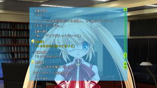
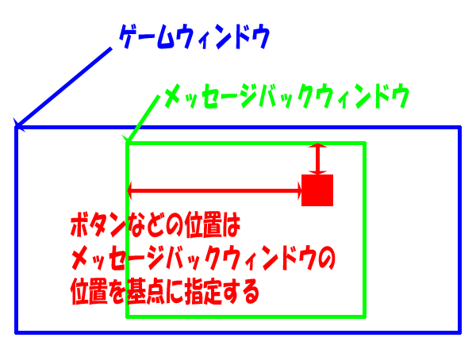
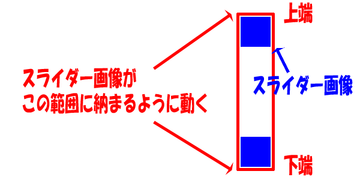
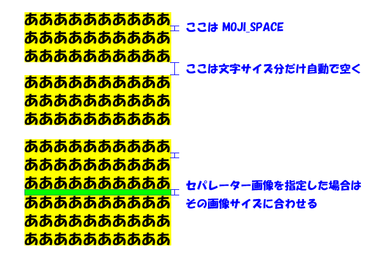

設定ファイル ＞ メッセージバックの設定
メッセージバックの設定 メッセージバックを表示するウィンドウの設定をします。 設定ファイル// ------------------------------------------------------------- // ウィンドウの設定 #MSGBK.WINDOW_POS = 160, 20 // ウィンドウの位置（Ｘ、Ｙ）（普通は 0, 0 でいいと思います） #MSGBK.WINDOW_SIZE = 960, 680 // ウィンドウのサイズ（幅、高） #MSGBK.DISP_MARGIN = 0, 20, 0, 20 // メッセージなどを表示する矩形（ウィンドウからのマージンで指定）（左、上、右、下） #MSGBK.MESSAGE_POS = 160 // メッセージを表示する位置（Ｘ） #MSGBK.MOJI_CNT = 25, 12 // 表示する文字数（横、縦） #MSGBK.MOJI_SIZE = 25 // 文字のサイズ #MSGBK.MOJI_SPACE = 0, 10 // 文字間のスペース（横、縦） // ------------------------------------------------------------- // 背景の設定 #MSGBK.BACK_FILE = "_fmsgbk_back_yoko" // 背景ファイル（必要ない場合は ""） // ------------------------------------------------------------- // フィルターの設定 #MSGBK.FILTER_FILE = "" // フィルターファイル #MSGBK.FILTER_MARGIN = 0, 0, 0, 0 // フィルター矩形（ウィンドウからのマージンで指定）（左、上、右、下） #MSGBK.FILTER_COLOR = 0, 0, 0, 255 // フィルター色（Ｒ、Ｇ、Ｂ、Ａ） // ------------------------------------------------------------- // 閉じるボタン #MSGBK_ITEM.CLOSE_BTN.FILE = "_fmsgbk_btn_close" #MSGBK_ITEM.CLOSE_BTN.POS = 887, 12 // ボタンの位置（ウィンドウからの位置で指定） #MSGBK_ITEM.CLOSE_BTN.ACTION = 1 // ボタンアクション番号 #MSGBK_ITEM.CLOSE_BTN.SE = -1 // ボタン効果音番号 // ------------------------------------------------------------- // スライダー #MSGBK_ITEM.SLIDER.FILE = "_fmsgbk_slider" #MSGBK_ITEM.SLIDER.POS = 888, 80, 633 // ボタンの位置（ウィンドウからの座標で指定） #MSGBK_ITEM.SLIDER.ACTION = 1 // ボタンアクション番号 #MSGBK_ITEM.SLIDER.SE = -1 // ボタン効果音番号 // ------------------------------------------------------------- // ↑ボタン #MSGBK_ITEM.MSG_UP_BTN.FILE = "_fmsgbk_btn_msg_up" #MSGBK_ITEM.MSG_UP_BTN.POS = 887, 46 // ボタンの位置（ウィンドウからの座標で指定） #MSGBK_ITEM.MSG_UP_BTN.ACTION = 1 // ボタンアクション番号 #MSGBK_ITEM.MSG_UP_BTN.SE = -1 // ボタン効果音番号 // ------------------------------------------------------------- // ↓ボタン #MSGBK_ITEM.MSG_DOWN_BTN.FILE = "_fmsgbk_btn_msg_down" #MSGBK_ITEM.MSG_DOWN_BTN.POS = 887, 641 // ボタンの位置（ウィンドウからの座標で指定） #MSGBK_ITEM.MSG_DOWN_BTN.ACTION = 1 // ボタンアクション番号 #MSGBK_ITEM.MSG_DOWN_BTN.SE = -1 // ボタン効果音番号 // ------------------------------------------------------------- // 声ボタン #MSGBK_ITEM.KOE_BTN.FILE = "_fmsgbk_btn_koe" #MSGBK_ITEM.KOE_BTN.POS = -40, 0 // ボタンの位置（メッセージからの座標で指定） #MSGBK_ITEM.KOE_BTN.ACTION = 0 // ボタンアクション番号 #MSGBK_ITEM.KOE_BTN.SE = -1 // ボタン効果音番号 // ------------------------------------------------------------- // ロードボタン #MSGBK_ITEM.LOAD_BTN.FILE = "_fmsgbk_btn_load" #MSGBK_ITEM.LOAD_BTN.POS = -140, 0 // ボタンの位置（メッセージからの座標で指定） #MSGBK_ITEM.LOAD_BTN.ACTION = 1 // ボタンアクション番号 #MSGBK_ITEM.LOAD_BTN.SE = -1 // ボタン効果音番号 // ------------------------------------------------------------- // ロードコール #MSGBK.LOAD_CALL = "_system", "$msgbk_btn_load" // ボタンのコール先の設定 // ------------------------------------------------------------- // セパレーター #MSGBK.SEPARATOR_FILE = "_fmsgbk_separator" // セパレーターの画像 #MSGBK.SEPARATOR_TOP_FILE = "_fmsgbk_separator_top" // セパレーターの画像（先頭） #MSGBK.SEPARATOR_BOTTOM_FILE = "_fmsgbk_separator_bottom" // セパレーターの画像（末尾） // ------------------------------------------------------------- // その他の設定 #MSGBK.MSG_CLICK_ACTION = 2 // メッセージをクリックしたときの動作（0=無し、1=声を再生、2=ロード） メッセージウィンドウの位置と大きさ メッセージウィンドウのウィンドウの位置と大きさを指定します。 ボタンやスライダーの位置は、メッセージバックのウィンドウの左上を基点に位置を指定します。 メッセージなどを表示する矩形メッセージや声アイコンなどを表示できる範囲です。この範囲で文字や画像は切り取られます。 ウィンドウからのマージンで指定します。 フィルター「ファイルで指定する方法」と「矩形と色で指定する方法」があります。 詳しくは メッセージウィンドウ枠個別の設定 を参考にして下さい。 ボタンのアクション番号と効果音番号それぞれ ボタンアクションの設定、ボタン効果音の設定 を参照して下さい。 スライダーの動く範囲 スライダーの範囲は、Ｘ座標および、Ｙ座標の上端と下端を指定します。 スライダーの画像がその範囲に納まるように動きます。 セパレーター セパレーターを画像で指定できます。 セパレーターを指定した場合、文と文の間はその画像の大きさになります。 セパレーターを指定しなかった場合、文字サイズ分だけ自動で空けられます。 ターゲットの文字色中央付近にあるメッセージは黄色になっていますが、デバッグ時のみです。 'P' キーを押したときにコピーされるメッセージは、黄色くなっているこのメッセージです。 この色を変えることはできません。 |